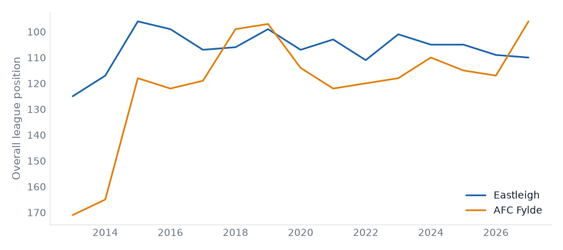
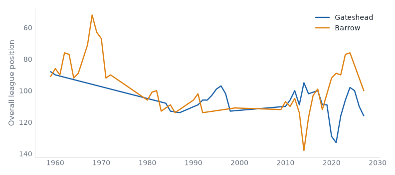

League One, League Two and the National League, 10 November to 16 November 2026. 26 results.Friday's preview.
Milton Keynes Dons 6–2 Burton. Friday's case: above level, neighbours, promoted last season. Milton Keynes Dons up from 12th to 9th; Burton stay 15th.
AFC Wimbledon 1–0 Blackpool. Friday's case: fallen giant, above level, neighbours, yo-yo club. AFC Wimbledon up from 18th to 17th; Blackpool down from 19th to 20th.
Southend 2–1 Aldershot. Friday's case: 2 below level, yo-yo club. Southend stay 3rd; Aldershot down from 14th to 15th.
Scunthorpe 1–1 Worthing. Friday's case: below level, 2 above level, yo-yo club. Scunthorpe stay 23rd; Worthing down from 6th to 7th.
Shrewsbury 2–1 Oldham. Friday's case: fallen giant, below level, neighbours, yo-yo club. Shrewsbury up from 15th to 10th; Oldham down from 18th to 20th.
Wigan 2–1 Barnsley. Friday's case: fallen giant, below level, neighbours, yo-yo club. Wigan up from 21st to 19th; Barnsley stay 23rd.
Sheffield Weds 3–0 Plymouth. Friday's case: fallen giant, below level, yo-yo club, relegated last season. Sheffield Weds up from 9th to 5th; Plymouth down from 5th to 6th.
Stockport 3–1 Reading. Friday's case: fallen giant, above level, yo-yo club. Stockport stay 2nd; Reading down from 6th to 7th.
Bristol Rvs 0–2 Chesterfield. Friday's case: below level, yo-yo club. Bristol Rvs down from 17th to 18th; Chesterfield up from 10th to 7th.
Fleetwood Town 1–0 Tranmere. Friday's case: below level, yo-yo club. Fleetwood Town up from 16th to 11th; Tranmere down from 11th to 15th.
Eastleigh 1–2 Fylde compare
National League, Sat 14 Nov
Eastleigh have 19 points from 17 games, their worst start in their record.

Gateshead 0–3 Barrow compare
National League, Sat 14 Nov
Gateshead have 4 points from 16 games, their worst start in their record.

Yeovil 2–2 Boreham Wood compare
National League, Sat 14 Nov
Boreham Wood have 20 games unbeaten in a row, their longest run in their record. Boreham Wood have 45 points from 17 games, their best start in their record.
Harrogate 4–0 Altrincham compare
National League, Sat 14 Nov
Harrogate Town beat Altrincham for the first time since 2013/14.
Hornchurch 2–1 Tamworth compare
National League, Sat 14 Nov
Hornchurch have 24 points from 17 games, their best start since 2013/14. Tamworth have 17 points from 16 games, their worst start since 2014/15.
Scunthorpe 1–1 Worthing compare
National League, Sat 14 Nov
Scunthorpe United have 11 points from 16 games, their worst start since 1981/82.
Southend 2–1 Aldershot compare
National League, Sat 14 Nov
Southend United have 32 points from 17 games, their best start since 2011/12.
| Sat 14 | AFC Wimbledon | 1–0 | Blackpool | ↑1 ↓1 | compare | |
| Sat 14 | Milton Keynes Dons | 6–2 | Burton | ↑3 | compare | first win v Burton Albion since 2021/22 |
| Sat 14 | Sheffield Weds | 3–0 | Plymouth | ↑4 ↓1 | compare | |
| Sat 14 | Stockport | 3–1 | Reading | ↓1 | compare | |
| Sat 14 | Wigan | 2–1 | Barnsley | ↑2 | compare | worst start since 2021/22 |
| P | W | D | L | GD | Pts | ||
|---|---|---|---|---|---|---|---|
| 1 | MK Dons | 6 | 5 | 0 | 1 | +12 | 15 |
| 2 | Huddersfield Town | 6 | 4 | 2 | 0 | +9 | 14 |
| 3 | Luton Town | 6 | 4 | 1 | 1 | +5 | 13 |
| 4 | Stockport County | 6 | 4 | 1 | 1 | +5 | 13 |
| 5 | Oxford United | 6 | 3 | 3 | 0 | +4 | 12 |
| 6 | Mansfield Town | 6 | 3 | 2 | 1 | +5 | 11 |
| 7 | Leicester City | 6 | 3 | 1 | 2 | +5 | 10 |
| 8 | Wycombe Wanderers | 6 | 2 | 3 | 1 | +1 | 9 |
| 9 | Sheffield Wednesday | 6 | 2 | 2 | 2 | +4 | 8 |
| 10 | Cambridge United | 6 | 2 | 2 | 2 | -2 | 8 |
| 11 | Leyton Orient | 6 | 2 | 1 | 3 | +1 | 7 |
| 12 | Stevenage | 6 | 2 | 1 | 3 | 0 | 7 |
| 13 | Bradford City | 6 | 1 | 4 | 1 | -1 | 7 |
| 14 | Notts County | 6 | 2 | 1 | 3 | -1 | 7 |
| 15 | Reading | 6 | 2 | 1 | 3 | -3 | 7 |
| 16 | Wigan Athletic | 6 | 2 | 1 | 3 | -3 | 7 |
| 17 | Plymouth Argyle | 6 | 2 | 1 | 3 | -6 | 7 |
| 18 | Doncaster Rovers | 6 | 2 | 0 | 4 | -7 | 6 |
| 19 | Peterborough United | 6 | 1 | 2 | 3 | -4 | 5 |
| 20 | Burton Albion | 6 | 1 | 2 | 3 | -6 | 5 |
| 21 | Blackpool | 6 | 1 | 1 | 4 | -5 | 4 |
| 22 | AFC Wimbledon | 6 | 1 | 1 | 4 | -9 | 4 |
| 23 | Barnsley | 6 | 0 | 1 | 5 | -6 | 1 |
| 24 | Bromley | 6 | 0 | 1 | 5 | -10 | 1 |
| Sat 14 | Bristol Rvs | 0–2 | Chesterfield | ↓1 ↑3 | compare | worst start since 2020/21 |
| Sat 14 | Colchester | 2–0 | Gillingham | ↑2 ↓4 | compare | |
| Sat 14 | Crewe | 2–2 | Newport County | ↓1 | compare | |
| Sat 14 | Exeter | 1–0 | Cheltenham | ↑4 ↓4 | compare | best start since 2020/21 |
| Sat 14 | Fleetwood Town | 1–0 | Tranmere | ↑5 ↓4 | compare | first win v Tranmere Rovers since 2019/20 |
| Sat 14 | Port Vale | 4–2 | Accrington | ↑2 ↓4 | compare | |
| Sat 14 | Rochdale | 0–1 | York | ↓2 ↑3 | compare | |
| Sat 14 | Salford | 1–1 | Northampton | ↑2 | compare | 12 games unbeaten, longest since 2018/19 |
| Sat 14 | Shrewsbury | 2–1 | Oldham | ↑5 ↓2 | compare | worst start since 2021/22 |
| Sat 14 | Swindon | 1–4 | Grimsby | ↓3 ↑3 | compare |
| P | W | D | L | GD | Pts | ||
|---|---|---|---|---|---|---|---|
| 1 | Salford City | 6 | 5 | 1 | 0 | +7 | 16 |
| 2 | Exeter City | 6 | 4 | 1 | 1 | +4 | 13 |
| 3 | Port Vale | 6 | 4 | 1 | 1 | +4 | 13 |
| 4 | Barnet | 6 | 3 | 2 | 1 | +3 | 11 |
| 5 | Grimsby Town | 6 | 3 | 1 | 2 | +6 | 10 |
| 6 | Fleetwood Town | 6 | 3 | 1 | 2 | +2 | 10 |
| 7 | Shrewsbury Town | 6 | 3 | 1 | 2 | +1 | 10 |
| 8 | Accrington Stanley | 6 | 2 | 3 | 1 | +5 | 9 |
| 9 | Newport County | 6 | 2 | 3 | 1 | +3 | 9 |
| 10 | Walsall | 6 | 2 | 3 | 1 | +3 | 9 |
| 11 | Chesterfield | 6 | 2 | 2 | 2 | +2 | 8 |
| 12 | Northampton Town | 6 | 2 | 2 | 2 | +2 | 8 |
| 13 | Tranmere Rovers | 6 | 2 | 2 | 2 | +1 | 8 |
| 14 | Swindon Town | 6 | 2 | 2 | 2 | -1 | 8 |
| 15 | York City | 6 | 2 | 2 | 2 | -2 | 8 |
| 16 | Crewe Alexandra | 6 | 2 | 2 | 2 | -4 | 8 |
| 17 | Oldham Athletic | 6 | 2 | 1 | 3 | -1 | 7 |
| 18 | Gillingham | 6 | 2 | 1 | 3 | -3 | 7 |
| 19 | Cheltenham Town | 6 | 2 | 0 | 4 | -5 | 6 |
| 20 | Colchester United | 6 | 1 | 2 | 3 | -3 | 5 |
| 21 | Crawley Town | 6 | 1 | 2 | 3 | -3 | 5 |
| 22 | Rotherham United | 6 | 0 | 2 | 4 | -7 | 2 |
| 23 | Rochdale | 6 | 0 | 2 | 4 | -9 | 2 |
| 24 | Bristol Rovers | 6 | 0 | 1 | 5 | -8 | 1 |
| Sat 14 | Carlisle | 2–0 | Boston Utd | ↑2 | compare | |
| Sat 14 | Eastleigh | 1–2 | Fylde | ↓1 | compare | worst start on record |
| Sat 14 | Gateshead | 0–3 | Barrow | ↑1 | compare | worst start on record |
| Sat 14 | Harrogate | 4–0 | Altrincham | ↓2 | compare | first win v Altrincham since 2013/14 |
| Sat 14 | Hartlepool | 1–1 | Wealdstone | ↑1 | compare | |
| Sat 14 | Hornchurch | 2–1 | Tamworth | ↑3 | compare | best start since 2013/14 |
| Sat 14 | Kidderminster | 1–1 | Halifax | compare | best start since 2018/19 | |
| Sat 14 | Scunthorpe | 1–1 | Worthing | ↓1 | compare | worst start since 1981/82 |
| Sat 14 | Southend | 2–1 | Aldershot | ↓1 | compare | best start since 2011/12 |
| Sat 14 | Sutton | 0–2 | Solihull | compare | worst start since 2017/18 | |
| Sat 14 | Yeovil | 2–2 | Boreham Wood | compare | 20 games unbeaten, longest on record |
| P | W | D | L | GD | Pts | ||
|---|---|---|---|---|---|---|---|
| 1 | Boreham Wood | 6 | 5 | 1 | 0 | +10 | 16 |
| 2 | Carlisle United | 6 | 5 | 1 | 0 | +10 | 16 |
| 3 | Barrow | 6 | 5 | 1 | 0 | +9 | 16 |
| 4 | Harrogate Town | 6 | 4 | 1 | 1 | +7 | 13 |
| 5 | AFC Fylde | 6 | 4 | 0 | 2 | +1 | 12 |
| 6 | FC Halifax Town | 6 | 3 | 2 | 1 | +6 | 11 |
| 7 | Worthing | 6 | 3 | 2 | 1 | +4 | 11 |
| 8 | Southend United | 6 | 3 | 2 | 1 | +3 | 11 |
| 9 | Yeovil Town | 6 | 3 | 1 | 2 | +10 | 10 |
| 10 | Tamworth | 6 | 3 | 0 | 3 | +3 | 9 |
| 11 | Woking | 6 | 3 | 0 | 3 | 0 | 9 |
| 12 | Solihull Moors | 6 | 3 | 0 | 3 | -4 | 9 |
| 13 | Hartlepool United | 6 | 2 | 1 | 3 | -1 | 7 |
| 14 | Sutton United | 6 | 2 | 1 | 3 | -1 | 7 |
| 15 | Altrincham | 6 | 2 | 1 | 3 | -5 | 7 |
| 16 | Wealdstone | 6 | 2 | 1 | 3 | -6 | 7 |
| 17 | Forest Green Rovers | 6 | 1 | 3 | 2 | -2 | 6 |
| 18 | Hornchurch | 6 | 2 | 0 | 4 | -4 | 6 |
| 19 | Boston United | 6 | 2 | 0 | 4 | -9 | 6 |
| 20 | Kidderminster Harriers | 6 | 0 | 4 | 2 | -2 | 4 |
| 21 | Eastleigh | 6 | 1 | 1 | 4 | -5 | 4 |
| 22 | Aldershot Town | 6 | 1 | 0 | 5 | -7 | 3 |
| 23 | Scunthorpe United | 6 | 0 | 1 | 5 | -10 | 1 |
| 24 | Gateshead | 6 | 0 | 0 | 6 | -10 | 0 |
Boreham Wood: 20 games unbeaten in a row, equalling their record (2026/27).
Gateshead: 14 games without a win in a row; the record is 16 (2025/26).
Built from the English football database, tiers 1–5 from 1958/59. Results from football-data.co.uk. Archived copy.